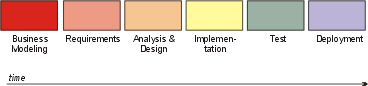
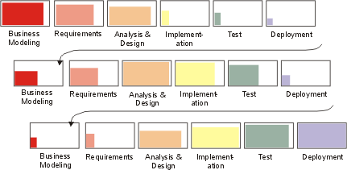
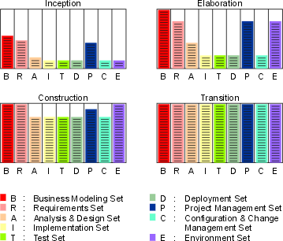

| Concept: Iteration |
 |
|
| Related Elements |
|---|
What is an Iteration?
An iteration encompasses the development activities that lead to a product release-a stable, executable version
of the product, together with any other peripheral elements necessary to use this release. So a development iteration
is in some sense one complete pass through all the disciplines: Requirements, Analysis & Design, Implementation,
and Test, at least. It is like a small waterfall project in itself. Note that evaluation criteria are established when
each iteration is planned. The release will have planned capability which is demonstrable. The duration of an iteration
will vary depending on the size and nature of the project, but it is likely that multiple builds will be constructed in each iteration, as specified in
the Integration Build Plan for the iteration. This is a consequence of
the continuous integration approach recommended in the Rational Unified Process (RUP): as unit-tested components become
available, they are integrated, then a build is produced and subjected to integration testing. In this way, the
capability of the integrated software grows as the iteration proceeds, towards the goals set when the iteration was
planned. It could be argued that each build itself represents a mini-iteration, the difference is in the planning
required and the formality of the assessment performed. It may be appropriate and convenient in some projects to
construct builds on a daily basis, but these would not represent iterations as the RUP defines them-except perhaps for
a very small, single person project. Even for small multi-person projects (for example, involving five people building
10,000 lines of code), it would be very difficult to achieve an iteration duration of less than a week. For an
explanation of why, see Why Iterate?Traditionally, projects have been organized to go through each discipline in sequence, once and only once. This leads to the waterfall lifecycle:
 This often results in an integration 'pile-up' late in implementation when, for the first time, the product is built and testing begins. Problems which have remained hidden throughout Analysis, Design and Implementation come boiling to the surface, and the project grinds to a halt as a lengthy bug-fix cycle begins. A more flexible (and less risky) way to proceed is to go several times through the various development disciplines, building a better understanding of the requirements, engineering a robust architecture, ramping up the development organization, and eventually delivering a series of implementations that are gradually more complete. This is called an iterative lifecycle. Each pass through the sequence of process disciplines is called an iteration.
 Therefore, from a development perspective the software lifecycle is a succession of iterations, through which the software develops incrementally. Each iteration concludes with the release of an executable product. This product may be a subset of the complete vision, but useful from some engineering or user perspective. Each release is accompanied by supporting work products: release description, user documentation, plans, and so on, and updated models of the system. The main consequence of this iterative approach is that the work products, described earlier, grow and mature over time, as shown in the following diagram.
 Information set evolution over the development phases. Minor milestoneEach iteration is concluded by a minor milestone, where the result of the iteration is assessed relative to the objective success criteria of that particular iteration. |

© Copyright IBM Corp. 1987, 2005 All Rights Reserved |